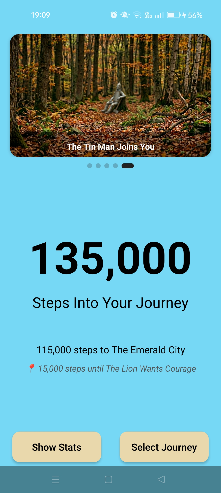
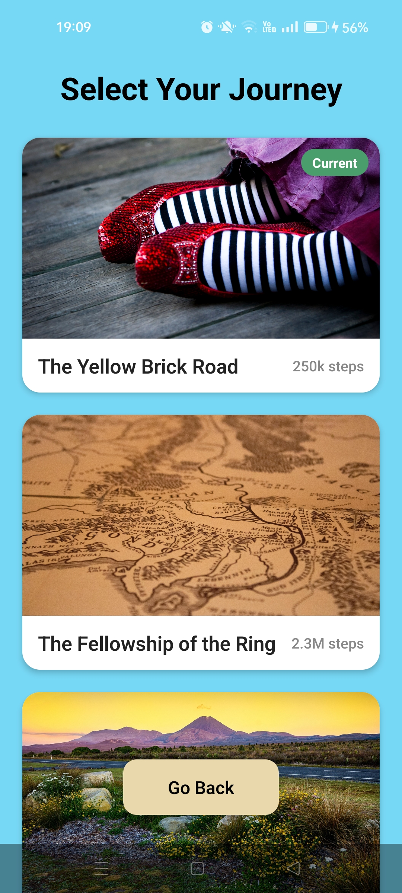
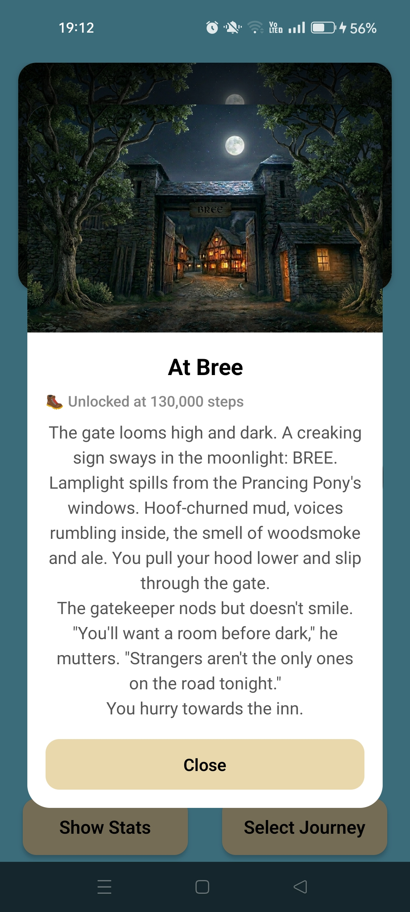
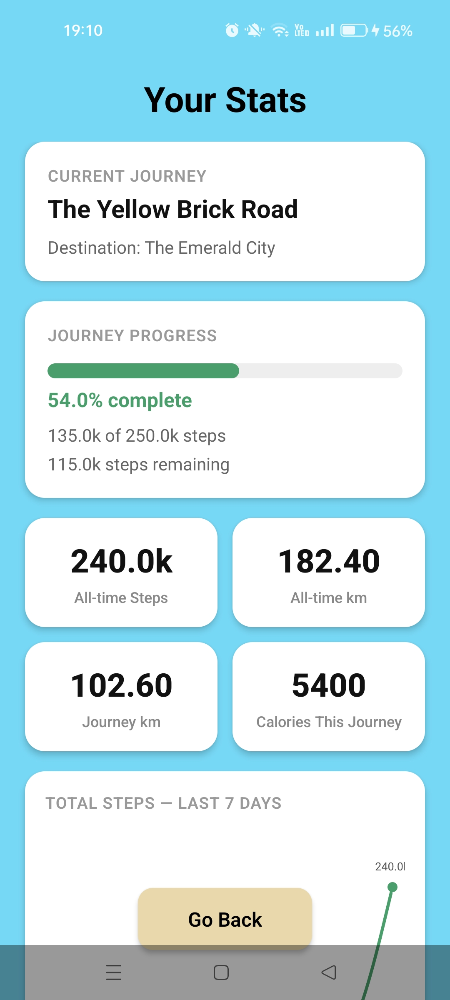
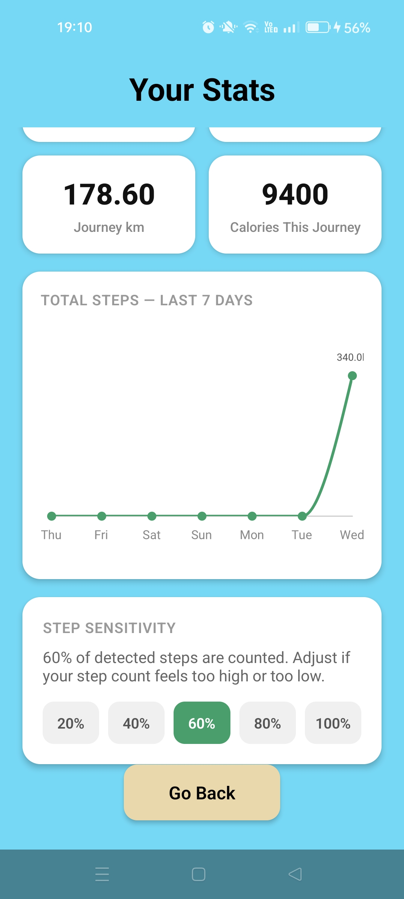

Road of OZ





Key Features
- Real-time step tracking using device pedometer (works in background)
- Immersive journey system with themed routes and step goals
- Landmark unlocking system with notifications and interactive popups
- Animated step counter and progress tracking
- 7-day stats, distance tracking, and calorie estimation
- Adjustable step sensitivity to filter inaccurate motion
Technologies Used
Frontend: React Native (Expo)
State Management: React Context API
APIs & Libraries: expo-sensors, expo-notifications, AsyncStorage
Data Visualization: Victory Native, react-native-svg
❮
 ❯
❯